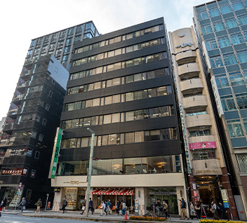

【個室レンタルオフィス】
オープンオフィス西新橋
オープンオフィス西新橋がNEW OPEN
丸の内、有楽町、銀座、品川に連なるビジネス街として発達し、旧来より大企業のオフィスが多く存在する信頼が高い住所に、オープンオフィス西新橋があります。丸の内、品川、虎ノ門などのビジネス街を網羅できるビジネスの拠点となります。
オープンオフィス西新橋が提供するオフィスサービス
-
 高速インターネット＜光ファイバー＞
高速インターネット＜光ファイバー＞
- 100Mbpsの光ファイバーによるブロードバンド環境をご用意しました。各部屋に配線済みですので、パソコンに繋げばすぐLAN経由で高速インターネットを利用出来ます。
-
 ネットワーク・カラーレーザープリンタ+スキャナー
ネットワーク・カラーレーザープリンタ+スキャナー
- ネットワークを利用して、各お部屋のパソコンから印刷できます。プリンタをご用意いただく必要もございません。
スキャナー機能も搭載しております。
-
 カラーレーザーコピー
カラーレーザーコピー
- フロア内にご用意してあります。カード方式でコピーが出来ますので、小銭の準備が不要です。
-
 ICカードキーによる入室管理
ICカードキーによる入室管理
- 専用ICカードを使ったホテル式のスマートシステムを用いて、セキュリティーを向上させています。
-
 ミーティングルーム（会議室）
ミーティングルーム（会議室）
- 商談・会議にご利用いただける共有スペースをご用意しています。インターネットで簡単に予約をしていただけます。
-
 無線LAN（WiFi）
無線LAN（WiFi）
- 共有スペースとミーティングスペースにて、無線LAN(WiFi)サービスをご利用いただけます。

オープンオフィス西新橋の特徴

虎ノ門ヒルズのオープンで注目されるエリア
新橋駅、内幸町駅、御成門駅の３駅利用可能
環状二号線と日比谷通りが交わる、わかりやすいロケーション
新規ビジネスを信頼ある住所でサポート
24時間入退館可能
オフィス周辺のMap
オープンオフィス西新橋近隣のスポット
- ■銀行
- 三井住友銀行
三菱東京UFJ銀行
みずほ銀行 - ■レストラン
- 割烹 室井
トロワフレーシュ
鮨 くわ野 - ■ホテル
- アンダーズ東京
コンラッド東京
第一ホテル - ■レジャー
- 新橋フィットネススタジオ
- ■余暇施設
- 虎ノ門ヒルズフォーラム
ニッショーホール
オープンオフィス西新橋の住所・アクセス
- 住所:
- 東京都港区新橋4-31-3第3名和ビル1F－9F
- 空港からのアクセス:
- 羽田空港から芝パークホテルまでリムジンバスで約60分
羽田空港から浜松町・新橋経由で約30分 - 電車からのアクセス:
- JR・東京メトロ、都営地下鉄『新橋駅』烏森口より徒歩7分、
都営地下鉄三田線『内幸町駅』から徒歩5分、『御成門駅』から徒歩5分 - お車でのアクセス:
- 日比谷通り、環状二号線の交差点「新橋４丁目交差点」角
リージャスグループの説明
リージャス・グループは、柔軟なワークスペースを提供する世界最大の企業です。そのネットワークは世界120カ国1,100都市、3300拠点に及びます。会員数は250万人で、業界で成功を収める大小様々な企業や起業家の方々にご利用いただいています。
リージャスは、個室タイプのレンタルオフィス、コワーキングスペースなど多彩なオフィスプラン、近年需要が高まるモバイルワークやバーチャルオフィス、障害復旧サービスの提供を通じ、お客様が予算やワークスタイルに合わせて仕事を行うことができる環境を提供いたします。